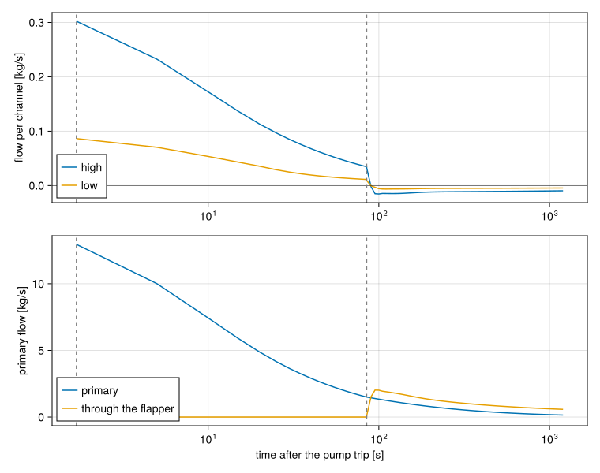
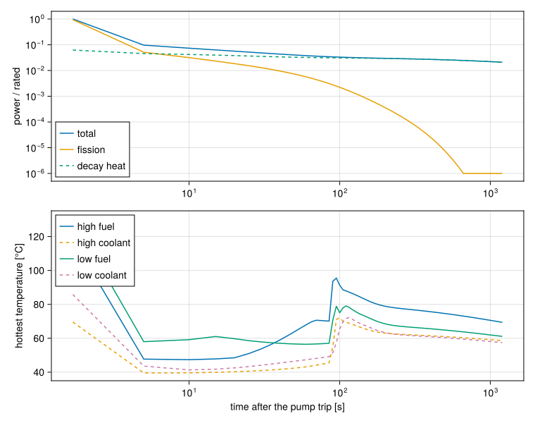
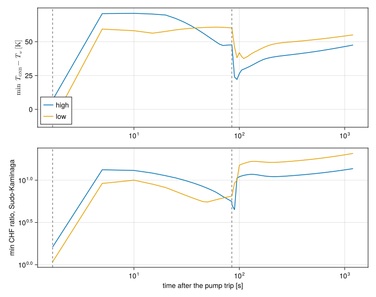

Loss of flow in a pool reactor
Download this tutorial as a Julia script or a Jupyter notebook.
This tutorial puts the previous five together into the transient a research reactor's safety analysis is most often about: a loss of flow. In a pool-type reactor the primary pump draws water down through the core and back to the pool. When the pump trips:
- a flywheel keeps the flow up for a while as the pump coasts down;
- the protection system sees the primary flow fall below a setpoint and scrams the reactor;
- decay heat keeps heating the fuel after the scram;
- once the primary flow is low enough, a check valve above the core, the flapper, opens and connects the core to the pool;
- the hot core then drives natural circulation: water rises up through the fuel and into the pool, the opposite direction to forced flow.
The core holds two kinds of fuel assembly, a high-power type that takes most of the flow and a low-power type throttled harder at its inlet, each standing for many identical channels.
The numbers in this tutorial describe no real reactor. They are placeholders, sized so the model behaves as a real one would.
The case
using STREAM
using STREAM.Components: Pump, Inertia, ResistorFromKnownPoint, HeatExchanger, Channel,
ChannelAndContacts, HeatDiffusion, Flapper, PointKinetics,
ReactivityController, StateMachine, machine_callbacks,
U235_LAMBDA, U235_BETA_K, U235_LAMBDA_K
using STREAM.Assemblies: inseries, inparallel, weighted, symmetric_plate
using STREAM.Thresholds
using STREAM.Utilities: cosine_shape
using ModelingToolkit: @named, mtkcompile
using OrdinaryDiffEq: Rodas5P
using SteadyStateDiffEq: DynamicSS
case = (
L=0.6, n=6, nx=2, # heated length [m], axial and lateral cells
rho_s=2700.0, cp_s=900.0, k_s=180.0, # plate properties
T_pool=35.0, p_pool=1.7e5, # pool temperature [°C], pressure at the core top [Pa]
P_rated=2.0e6, # rated power [W]
dP_pump=3.9e4, # pump head [Pa]
flywheel_L_over_A=2.5e4, # flywheel inertia [1/m]
primary_dp=3.0e4, # primary piping drop at design flow [Pa]
riser_L=0.6, riser_D=0.3, # riser height and diameter [m]
flapper_open_at=1.5, flapper_f=1.0, # primary flow that opens the flapper [kg/s]
flapper_area=0.03, flapper_open_time=2.0, # and its open loss, area [m²], opening time [s]
trip_fraction=0.85, # low-flow trip, fraction of design flow
types=(
high=(N=40, width=0.066, gap=0.0027, heated_width=0.063, plate_thickness=0.00127,
ppf=1.4, power_fraction=0.9, orifice_dp=2.0e3, design_ṁ=0.356),
low=(N=10, width=0.066, gap=0.0027, heated_width=0.063, plate_thickness=0.00127,
ppf=1.3, power_fraction=0.1, orifice_dp=7.9e3, design_ṁ=0.1),
),
)(L = 0.6, n = 6, nx = 2, rho_s = 2700.0, cp_s = 900.0, k_s = 180.0, T_pool = 35.0, p_pool = 170000.0, P_rated = 2.0e6, dP_pump = 39000.0, flywheel_L_over_A = 25000.0, primary_dp = 30000.0, riser_L = 0.6, riser_D = 0.3, flapper_open_at = 1.5, flapper_f = 1.0, flapper_area = 0.03, flapper_open_time = 2.0, trip_fraction = 0.85, types = (high = (N = 40, width = 0.066, gap = 0.0027, heated_width = 0.063, plate_thickness = 0.00127, ppf = 1.4, power_fraction = 0.9, orifice_dp = 2000.0, design_ṁ = 0.356), low = (N = 10, width = 0.066, gap = 0.0027, heated_width = 0.063, plate_thickness = 0.00127, ppf = 1.3, power_fraction = 0.1, orifice_dp = 7900.0, design_ṁ = 0.1)))The riser is as tall as the core, so the hydrostatic heads cancel around the loop at uniform temperature, and the pump head matches the loop's drop at design flow.
Reactor protection and decay heat
The control rods fall 0.1 s after the trip signal and are fully in 0.5 s later, worth 6% of reactivity. ReactivityController makes the rod reactivity a function of the state of a StateMachine: zero in :NORMAL, the falling rods once the machine is in :SCRAM.
rod(τ) = -0.06 * clamp((τ - 0.1) / 0.5, 0.0, 1.0)
ctrl = ReactivityController((state, t_state, t) -> state === :SCRAM ? rod(t - t_state) : 0.0;
machine=StateMachine())STREAM.Components.StateSchedule{Main.var"#2#3"}(Main.var"#2#3"(), STREAM.Components.StateMachine(STREAM.Components.Transition[], :NORMAL, 0.0, @NamedTuple{state, t::Float64, cause::String}[@NamedTuple{state, t::Float64, cause::String}((:NORMAL, 0.0, "initial"))], Set{Any}()))Decay heat enters the kinetics as a DecayHeatSource, which reads the time of the scram off the same machine. A real analysis takes the fission products from a standard, DecayHeat.FissionProducts(DecayHeat.ANS14, DecayHeat.U235), which needs the tables (see Add decay heat to a transient). The tables are not distributed with STREAM, so this tutorial uses four made-up groups that give about 6% of the operating power at shutdown, plus the U-238 capture chain.
No DecayHeat.Fissions term: after the scram the kinetics already compute the fission power, delayed neutrons included, and adding it would count it twice.
heat = DecayHeat.U238CaptureChain(0.5) +
DecayHeat.FissionProducts([1.0, 0.05, 1e-3, 1e-5], [3.0, 0.15, 3e-3, 3e-5])
source = DecayHeat.DecayHeatSource(heat, ctrl; P0=1.0)
source(0.0)0.062162499999999996The kinetics run in units of the rated power, so P0 = 1, and the source is in the same units: the share of the rated power that is decay heat.
@named pk = PointKinetics(ctrl; power_input=source)Model pk:
Equations (8):
8 standard: see equations(pk)
Unknowns (8): see unknowns(pk)
P_neutron(t)
(C(t))[1]
(C(t))[2]
(C(t))[3]
⋮
Parameters (5): see parameters(pk)
Λ
β
λ
rho_c_fn
⋮
Observed (3): see observed(pk)The core
Each assembly type is one representative channel between two half plates, the unit cell of A fuel plate between two channels, behind an inlet orifice. The heat transfer model covers every regime the transient passes through: Dittus-Boelter in forced flow, the laminar constant at low flow, Elenbaas natural convection when buoyancy wins, and subcooled boiling on top. The friction switches between laminar and turbulent.
weighted makes one channel stand for N: it divides the flow entering the path by N and multiplies the flow leaving it by N.
z_edges = range(0.0, case.L; length=case.n + 1)
core_parts = []
paths = []
channels = Dict{Symbol,Any}()
power_eqs = []
for (key, ty) in pairs(case.types)
geom = PipeGeometry_rectangular(case.L, ty.width, ty.gap, ty.heated_width)
htc = HTC.SubcooledBoiling(
HTC.RegimeDependent(; laminar=HTC.ConstantNusselt(), turbulent=HTC.DittusBoelter(),
natural=HTC.Elenbaas(geom), geom),
HTC.regime_dependent_q_scb(),
)
darcy = Friction.RegimeDependent(; turbulent=Friction.blasius,
k_R=Friction.rectangular_correction(geom.depth / geom.width))
@named ch = ChannelAndContacts(; n=case.n, geometry=geom, g=-G_EARTH, htc, darcy)
@named fuel = HeatDiffusion(; nz=case.n, nx=case.nx, Lz=case.L, Lx=ty.plate_thickness,
y=ty.heated_width, rho_s=case.rho_s, cp_s=case.cp_s, k_s=case.k_s,
power_shape=repeat(cosine_shape(z_edges, ty.ppf) ./ case.nx, 1, case.nx),
T0=case.T_pool)
rods = symmetric_plate(ch, fuel; name=key)
pool = HeatExchanger(case.T_pool; name=Symbol(:pool_, key))
orifice = ResistorFromKnownPoint(; name=Symbol(:orifice_, key), dp=-ty.orifice_dp,
ṁ=ty.design_ṁ, T=case.T_pool)
path = weighted(ty.N, pool, orifice, rods.ch; name=key)
append!(core_parts, [first(path), pool, orifice, rods, last(path)])
push!(paths, path)
channels[key] = (rods.ch, geom)
push!(power_eqs, rods.fuel.power ~ pk.P * case.P_rated * ty.power_fraction / ty.N)
endEach plate gets its type's share of the reactor power, divided among the type's plates.
The primary loop and the flapper
ṁ_design = sum(ty.N * ty.design_ṁ for ty in case.types)
@named pump = Pump(case.dP_pump)
@named flywheel = Inertia(case.flywheel_L_over_A)
@named primary = ResistorFromKnownPoint(; dp=-case.primary_dp, ṁ=ṁ_design, T=case.T_pool)
@named riser = Channel(; n=case.n, geometry=PipeGeometry_circular(case.riser_L, case.riser_D),
g=G_EARTH)
@named pool_flapper = HeatExchanger(case.T_pool)Model pool_flapper:
Subsystems (2): see hierarchy(pool_flapper)
inlet
outlet
Equations (6):
4 standard: see equations(pool_flapper)
2 connecting: see equations(expand_connections(pool_flapper))
Unknowns (6): see unknowns(pool_flapper)
inlet₊p(t): Pressure (Pa), across variable
inlet₊ṁ(t): Mass flow rate (kg/s), positive = into port
inlet₊T(t): Temperature (°C), stream variable
outlet₊p(t): Pressure (Pa), across variable
⋮
Parameters (1): see parameters(pool_flapper)
T_bcThe flapper follows a machine of its own, separate from the reactor protection: it opens when the primary flow falls through its setpoint.
valve = StateMachine(; initial_state=:CLOSED)
@named flapper = Flapper(; machine=valve, f=case.flapper_f, area=case.flapper_area,
open_rate=1 / case.flapper_open_time)
valve.transitions = [(:CLOSED => :OPEN, flywheel.inlet.ṁ < case.flapper_open_at,
"primary flow below the flapper setpoint")]1-element Vector{Tuple{Pair{Symbol, Symbol}, Symbolics.Num, String}}:
(:CLOSED => :OPEN, flywheel₊inlet₊ṁ(t) < 1.5, "primary flow below the flapper setpoint")The protection system scrams the reactor on low primary flow:
push!(ctrl.machine, (:NORMAL => :SCRAM, flywheel.inlet.ṁ < case.trip_fraction * ṁ_design,
"low primary flow"))STREAM.Components.StateMachine(STREAM.Components.Transition[STREAM.Components.Transition(Set([:NORMAL]), :SCRAM, flywheel₊inlet₊ṁ(t) < 12.953999999999999, "low primary flow")], :NORMAL, 0.0, @NamedTuple{state, t::Float64, cause::String}[@NamedTuple{state, t::Float64, cause::String}((:NORMAL, 0.0, "initial"))], Set{Any}())Connecting and compiling
The two core paths and the riser run in parallel from the flywheel's outlet, which feeds the core's top from the pool, to the flapper node. The flapper's path runs in parallel with the primary piping. One pressure is fixed: the pool above the core.
connections = [
inparallel(flywheel, paths, riser),
inparallel(flywheel, [(pool_flapper, flapper)], primary),
inseries(riser, primary, pump, flywheel),
flywheel.outlet.p ~ case.p_pool,
power_eqs,
]
@named plant = assembly(connections, pk, pump, flywheel, primary, riser, pool_flapper, flapper,
core_parts...)
sys = mtkcompile(plant)
ch_high, ch_low = (getproperty(sys, key).ch for key in keys(case.types))Base.Generator{Tuple{Symbol, Symbol}, Main.var"#8#9"}(Main.var"#8#9"(), (:high, :low))The steady state at full power
A loop has a solution with no flow at all, so the solve starts from the design flows and integrates to where the model settles, the robust way to find a loop's operating point (see Get a steady solve to converge).
guess = [sys.primary.inlet.ṁ => ṁ_design,
ch_high.inlet.ṁ => case.types.high.design_ṁ,
ch_low.inlet.ṁ => case.types.low.design_ṁ]
sol_ss = solve_steady(sys, guess; solver=DynamicSS(Rodas5P()), abstol=1e-10, reltol=1e-10)
sol_ss.retcodeReturnCode.Success = 1Each type gets its design flow, and the kinetics sit at rated power, of which the decay heat is the share the source gives:
@assert isapprox(sol_ss[ch_high.inlet.ṁ], case.types.high.design_ṁ; rtol=0.02)
@assert isapprox(sol_ss[ch_low.inlet.ṁ], case.types.low.design_ṁ; rtol=0.02)
@assert isapprox(sol_ss[sys.pk.P], 1.0; rtol=1e-9)
@assert isapprox(sol_ss[sys.pk.P_neutron], 1.0 - source(0.0); rtol=1e-9)
(high=sol_ss[ch_high.inlet.ṁ], low=sol_ss[ch_low.inlet.ṁ])(high = 0.3548471059274692, low = 0.10077574604914202)The transient
At $t = 0$ the pump stops. The machines' transitions become solver events through machine_callbacks, so each fires at the instant its condition is met. Saving onto every output time with tstops keeps saved values off the solver's interpolation, which strays for this model between widely spaced steps.
times = range(0.0, 1200.0; length=241)
sol = solve_transient(sys, sol_ss, times; overrides=[sys.pump.dP_pump => 0.0],
callbacks=machine_callbacks(sys, ctrl.machine, valve), tstops=times)
sol.retcodeReturnCode.Success = 1The machines' logs say what happened and when:
ctrl.machine.log2-element Vector{@NamedTuple{state, t::Float64, cause::String}}:
@NamedTuple{state, t::Float64, cause::String}((:NORMAL, 0.0, "initial"))
@NamedTuple{state, t::Float64, cause::String}((:SCRAM, 1.6919229925277668, "low primary flow"))valve.log2-element Vector{@NamedTuple{state, t::Float64, cause::String}}:
@NamedTuple{state, t::Float64, cause::String}((:CLOSED, 0.0, "initial"))
@NamedTuple{state, t::Float64, cause::String}((:OPEN, 84.83767735070376, "primary flow below the flapper setpoint"))The reactor scrammed when the primary flow fell through 85% of design, and the flapper opened later, once the flywheel had run down:
@assert ctrl.machine.state === :SCRAM && ctrl.machine.log[end].cause == "low primary flow"
@assert valve.state === :OPEN && valve.t_state > ctrl.machine.t_stateFlows
Both assembly types start with forced flow downward and end with natural circulation upward:
using CairoMakie
t_scram, t_open = ctrl.machine.t_state, valve.t_state
fig = Figure(size=(760, 600))
ax1 = Axis(fig[1, 1]; xscale=log10, ylabel="flow per channel [kg/s]")
ax2 = Axis(fig[2, 1]; xscale=log10, xlabel="time after the pump trip [s]",
ylabel="primary flow [kg/s]")
later = sol.t .> 0
for (key, ch) in (:high => ch_high, :low => ch_low)
lines!(ax1, sol.t[later], sol[ch.inlet.ṁ, :][later]; label=string(key))
end
hlines!(ax1, [0.0]; color=:black, linewidth=0.5)
lines!(ax2, sol.t[later], sol[sys.flywheel.inlet.ṁ, :][later]; label="primary")
lines!(ax2, sol.t[later], sol[sys.flapper.inlet.ṁ, :][later]; label="through the flapper")
for ax in (ax1, ax2)
vlines!(ax, [t_scram, t_open]; color=:gray, linestyle=:dash)
end
axislegend(ax1; position=:lb); axislegend(ax2; position=:lb)
fig
The dashed lines mark the scram and the flapper opening.
for (key, ch) in (:high => ch_high, :low => ch_low)
@assert sol[ch.inlet.ṁ, 1] > 0 && sol[ch.inlet.ṁ, end] < 0
endPower and temperatures
After the scram the fission power collapses within seconds, and decay heat is what is left:
fig = Figure(size=(760, 600))
ax1 = Axis(fig[1, 1]; xscale=log10, yscale=log10, ylabel="power / rated")
lines!(ax1, sol.t[later], sol[sys.pk.P, :][later]; label="total")
lines!(ax1, sol.t[later], max.(sol[sys.pk.P_neutron, :][later], 1e-6); label="fission")
lines!(ax1, sol.t[later], source.(sol.t[later]); label="decay heat", linestyle=:dash)
axislegend(ax1; position=:lb)
ax2 = Axis(fig[2, 1]; xscale=log10, xlabel="time after the pump trip [s]",
ylabel="hottest temperature [°C]")
for (key, ch) in (:high => ch_high, :low => ch_low)
fuel = getproperty(sys, key).fuel
T_fuel = [maximum(sol[fuel.T[i, j], k] for i in 1:case.n, j in 1:case.nx) for k in eachindex(sol.t)]
T_cool = [maximum(sol[ch.T[i], k] for i in 1:case.n) for k in eachindex(sol.t)]
lines!(ax2, sol.t[later], T_fuel[later]; label="$(key) fuel")
lines!(ax2, sol.t[later], T_cool[later]; label="$(key) coolant", linestyle=:dash)
end
axislegend(ax2; position=:lt)
fig
The fuel temperature falls with the power at the scram, rises again as the flow runs down and turns around, and then falls slowly as natural circulation settles and the decay heat decays. At the end the fission power is gone, and the total is the decay heat:
@assert sol[sys.pk.P_neutron, end] < 1e-6
@assert isapprox(sol[sys.pk.P, end], source(times[end]); rtol=1e-4)and the pool takes it away. Water rising out of the core leaves through each channel's top cell into the pool, so the heat carried off by type is $N\,|\dot m|\,c_p\,(T_1 - T_\text{pool})$:
cp = cₚ(H2O, case.T_pool)
Q_pool = sum(case.types[key].N * abs(sol[ch.inlet.ṁ, end]) * cp * (sol[ch.T[1], end] - case.T_pool)
for (key, ch) in (:high => ch_high, :low => ch_low))
@assert isapprox(Q_pool, sol[sys.pk.P, end] * case.P_rated; rtol=0.05)
(Q_pool, sol[sys.pk.P, end] * case.P_rated)(42025.52987371175, 41993.79961535241)They agree to within the slow cooling of the plates, which still release some stored heat.
Margins through the transient
threshold_analysis evaluates the limits at every saved time. Two are meaningful through the whole transient: the margin to the onset of nucleate boiling, and the CHF ratio from Sudo-Kaminaga, the correlation built for low and reversed flow (see Critical heat flux).
fig = Figure(size=(760, 600))
ax1 = Axis(fig[1, 1]; xscale=log10, ylabel=L"min $T_\mathrm{ONB} - T_w$ [K]")
ax2 = Axis(fig[2, 1]; xscale=log10, yscale=log10, xlabel="time after the pump trip [s]",
ylabel="min CHF ratio, Sudo-Kaminaga")
for (key, (ch, geom)) in channels
chsys = getproperty(sys, key).ch
m = threshold_analysis(sol, chsys; pipe=geom,
onb = s -> bergles_rohsenow_t_onb(s) .- s.T_wall,
chfr = chfr(q_CHF_sudo_kaminaga))
lines!(ax1, sol.t[later], vec(minimum(m.onb; dims=1))[later]; label=string(key))
lines!(ax2, sol.t[later], vec(minimum(m.chfr; dims=1))[later]; label=string(key))
w = worst_case(m.chfr; times=sol.t)
println(rpad(key, 5), " worst CHF ratio ", round(w.value; sigdigits=3),
" at t = ", round(w.time; digits=1), " s, cell ", w.cell)
end
for ax in (ax1, ax2)
vlines!(ax, [t_scram, t_open]; color=:gray, linestyle=:dash)
end
axislegend(ax1; position=:lb)
fig
The CHF margin has two minima. The tighter one here is at the scram itself: the flow has already fallen to the trip setpoint, 85% of design, while the power is still at rated, since the rods have not yet moved. A trip setpoint closer to the design flow, or a faster trip, widens it. Once the rods are in, the margin jumps by an order of magnitude.
The second minimum comes with the flow reversal, around the time the flapper opens. The flow through the channels passes through zero, and the critical heat flux falls to its flooding value, while the plates still carry decay heat. In a reactor with a higher decay heat or a slower flapper, this is the minimum that governs, and it is why a loss of flow analysis needs a CHF correlation built for low and reversed flow.
Both minima fall at events, and the solution is saved at each event as well as at the output times, so neither falls between saved points.
The onset of significant void and of flow instability are left out: both are forced-flow correlations, and near zero flow they stop meaning anything. A full analysis evaluates them only while the flow is still forced, and reads the margins with the uncertainty factors described in Margins.